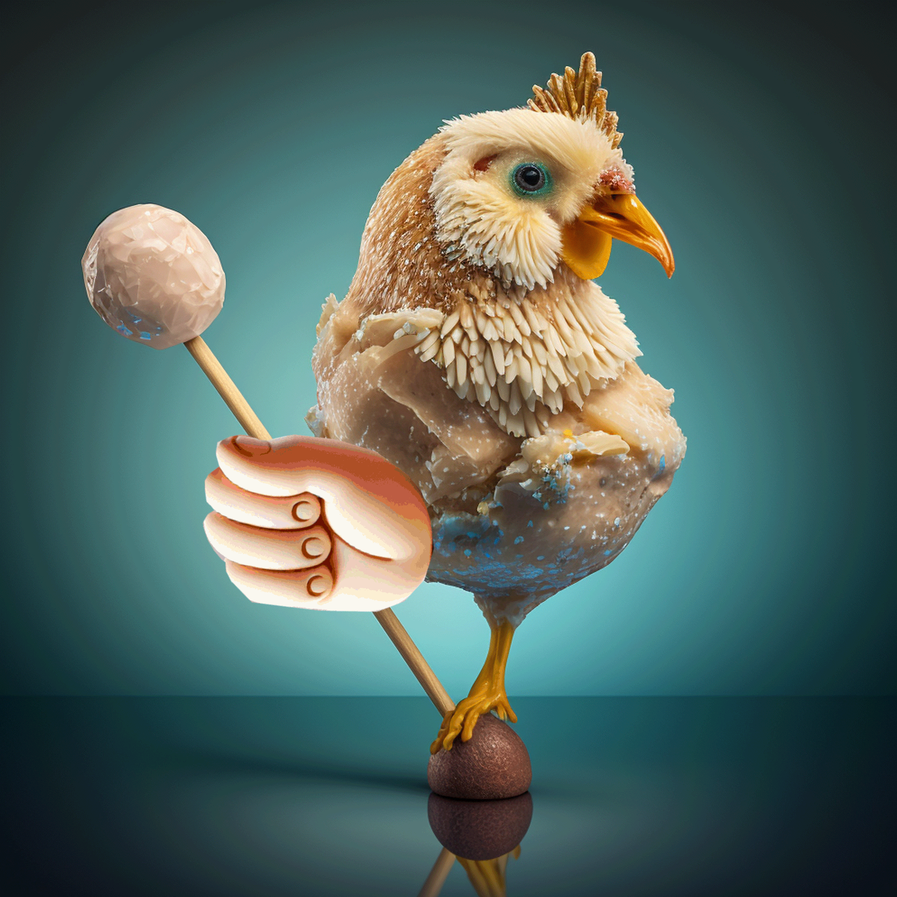

Welcome to $COSUK
A Multichain Experience
$COSUK is on the WallOnSolana - More bricks being bought soon to make this Cocksucker larger. See $WALL

This is the first solana memecoin meant to expose people to other
blockchains by rewarding them with coins, tokens, and NFTs from
Bellscoin,
$BSV, and
Dogecoin for being holders,
active in raids, and much more.
Grab wallets for these blockchains. Follow my main
 account and you'll see other things I am involved in. Get more from
your $COSUK investment than just the solana token!
account and you'll see other things I am involved in. Get more from
your $COSUK investment than just the solana token!
$COSUK is a community-driven degen token designed for those who know the SOLANA space is full of COCKSUCKERS! This is an attempt to work with another project ($WALL) to grow this token in an organic way. Again, I will be rewarding people who help push this token by tipping them with some real alpha.

About $COSUK
$COSUK is not just a token; it's an experience. Every $COSUK holder gets a taste of the sweetest tokenomics, designed to maximize rewards by incentivizing engagement in our community by airdropping various cryptocurrenices. All you need is to not be a Cocksucker.
Get Involved - Grab some $COSUK

Join our growing community and be part of the $COSUK de-generation. Whether you're here for the lollipops or the roosters, $COSUK is for everyone. I know that YOU know a few #COCKSUCKERS that have rekt you on Solana. I have a no-jeet policy and will be here til the end.